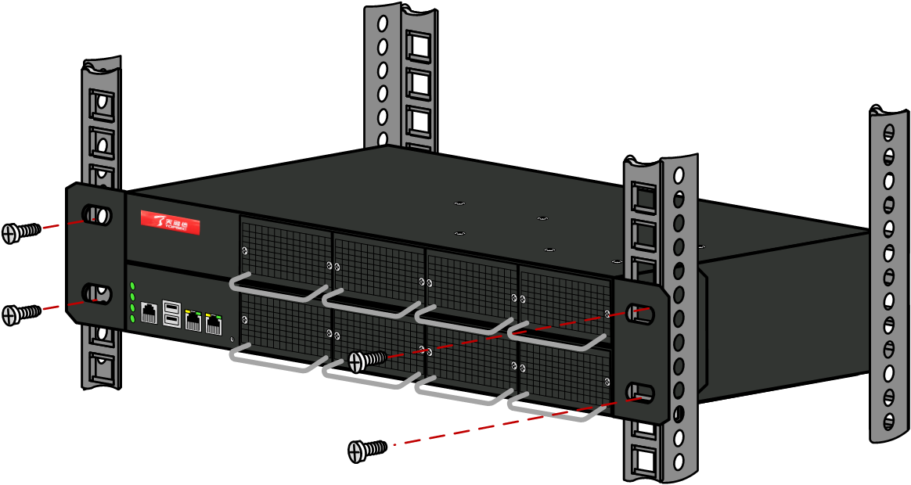

NGFW硬件设备有两种安装方式：直接安置于平台上、安装到机柜中。
l直接安置于平台上
用户并不具备19英寸标准机柜时，常用的方法就是将设备放置于干净的工作台上。此种操作比较简单，操作中需注意如下事项：
ü保证工作台的平稳性与良好接地
ü设备四周留出10cm的散热空间
ü不要在设备上放置重物
l安装到机柜中
NGFW设备是按照19英寸标准机柜的尺寸进行设计的，一般遵循如下步骤进行安装：
| 步骤1 | 检查机柜的接地与稳定性。用螺钉将固定挂耳固定在设备两侧。 |
| 步骤2 | 将设备置于机柜上（若机柜已安装托盘，则放置于托盘中）。根据实际情况，沿机柜导轨移动设备至合适位置，注意保证设备与导轨间的合适距离。 |
| 步骤3 | 用满足机柜安装尺寸要求的螺钉将设备通过固定挂耳固定在机柜上，此时需要保证设备在机柜上的位置水平并牢固，如下图所示。 |

| 步骤4 | 将设备的网络接口通过网线与对应安全区域中的网络设备相连接。 |
| 步骤5 | 通过电源线连接设备和电源。 |
| 步骤6 | 启动设备电源（电源开关位于设备后面板）。 |